SSAM Notebook: (Allen) MERFISH data SSAM analysis¶
[1]:
import ssam
import pandas as pd
[2]:
import matplotlib.pyplot as plt
import numpy as np
import seaborn as sns
[3]:
plt.rcParams["font.family"] = "Arial"
[4]:
cell_class_colors = {
"Lamp5": "#DA808C",
"Sncg": "#8510C0",
"Serpinf1": "#8510C0",
"Vip": "#70559A",
"Sst": "#F15A29",
"Pvalb": "#D93137",
"L2/3 IT": "#94D9A1",
"L4": "#00979D",
"L5 IT": "#008A61",
"L6 IT": "#A19922",
"L5 PT": "#0D5B78",
"L5 NP": "#3E9E64",
"L6 CT": "#69A8E6",
"L6 PT": "#69A8E6", #???
"L6b": "#266180",
"Meis2": "#FF0000",
"CR": "#00FF66",
"Astro": "#665C47",
"Oligo": "#53776C",
"VLMC": "#697255",
"Peri": "#665547",
"SMC": "#807059",
"Endo": "#8D6C62",
"Macrophage": "#537358",
}
[4]:
bad_genes = ['Cd52', 'Mup5', 'Rab3b', 'Rprml', 'Tac2']
[5]:
baysor_spots = pd.read_csv("data/baysor/merfish/segmentation.csv")
spots = pd.read_csv("data/raw/Allen_MERFISH_spots_with_anatomy.csv")
spots = spots.drop(spots.columns[:2], axis=1).drop_duplicates().reset_index(drop=True)
spots['is_noise'] = baysor_spots.is_noise
spots['cell'] = baysor_spots.cell
spots = spots[spots.layer != 'outside_VISp']
spots = spots[~spots.gene.str.contains("Blank-")]
for bad_gene in bad_genes:
spots = spots[spots.gene != bad_gene]
[6]:
coordinates_visp = [[2524.8618583932202, 6576.111948820892],
[1688.0005423837813, 5869.404423590317],
[2299.438470759311, 4923.428032738741],
[3273.6610578379136, 5452.419069146657],
[2851.6245044166735, 6284.883773573806],
[2851.6245044166735, 6284.883773573806],
[2524.8618583932202, 6576.111948820892]]
[7]:
import json
from shapely.geometry import Point, Polygon
p = Polygon(coordinates_visp)
spots['VISp'] = [True if p.intersects(Point(a)) else False for a in spots[["x_um","y_um"]].values]
[8]:
spots = spots[spots['VISp']]
[9]:
plt.figure(figsize=[20, 20])
plt.plot(*p.exterior.xy, c="r")
plt.scatter(spots.x_um, spots.y_um, s=0.1)
[9]:
<matplotlib.collections.PathCollection at 0x7f53e95ea910>

[10]:
beta = 1.03388671635385
rotm = np.array([[np.cos(beta), np.sin(beta)], [-np.sin(beta), np.cos(beta)]])
[11]:
pos_um = np.array([spots.x_um, spots.y_um])
rot_um = np.dot(pos_um.T, rotm)
rot_um[:, 0] -= np.min(rot_um[:, 0])
rot_um[:, 1] -= np.min(rot_um[:, 1])
[12]:
plt.figure(figsize=[15, 15])
plt.scatter(*rot_um.T, s=1)
plt.xlim([0, 1350])
plt.ylim([0, 1350])
[12]:
(0.0, 1350.0)
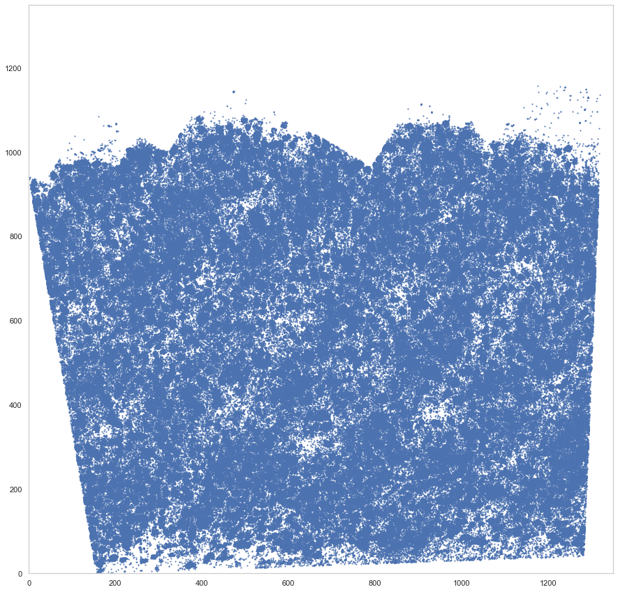
[5]:
ds = ssam.SSAMDataset("ssam_data/allen_merfish")
analysis = ssam.SSAMAnalysis(ds, ncores=10, verbose=True)
[14]:
locations = spots[["gene", "x_um", "y_um", "cell"]].rename(columns={'x_um': 'x', 'y_um': 'y'}).set_index('gene')
locations.x = rot_um[:, 0]
locations.y = rot_um[:, 1]
[15]:
locations.to_csv("Allen_MERFISH_filtered.csv")
[ ]:
analysis.run_kde(locations=locations, width=locations.x.max(), height=locations.y.max(), re_run=True)
Running KDE for gene 1700022I11Rik...
Saving KDE for gene 1700022I11Rik...
Running KDE for gene 1810046K07Rik...
Saving KDE for gene 1810046K07Rik...
Running KDE for gene 5031425F14Rik...
Saving KDE for gene 5031425F14Rik...
Running KDE for gene 5730522E02Rik...
Saving KDE for gene 5730522E02Rik...
Running KDE for gene Acta2...
Saving KDE for gene Acta2...
Running KDE for gene Adam2...
Saving KDE for gene Adam2...
Running KDE for gene Adamts2...
Saving KDE for gene Adamts2...
Running KDE for gene Adamts4...
Saving KDE for gene Adamts4...
Running KDE for gene Adra1b...
Saving KDE for gene Adra1b...
Running KDE for gene Alk...
Saving KDE for gene Alk...
Running KDE for gene Ankfn1...
Saving KDE for gene Ankfn1...
Running KDE for gene Ano4...
Saving KDE for gene Ano4...
Running KDE for gene Aqp4...
Saving KDE for gene Aqp4...
Running KDE for gene Asic4...
Saving KDE for gene Asic4...
Running KDE for gene B4galnt2...
Saving KDE for gene B4galnt2...
Running KDE for gene B4galnt3...
Saving KDE for gene B4galnt3...
Running KDE for gene Barx2...
Saving KDE for gene Barx2...
Running KDE for gene Bcl11b...
Saving KDE for gene Bcl11b...
Running KDE for gene Bdnf...
Saving KDE for gene Bdnf...
Running KDE for gene Bgn...
Saving KDE for gene Bgn...
Running KDE for gene Blnk...
Saving KDE for gene Blnk...
Running KDE for gene Bmpr1b...
Saving KDE for gene Bmpr1b...
Running KDE for gene Brinp3...
Saving KDE for gene Brinp3...
Running KDE for gene C1ql3...
Saving KDE for gene C1ql3...
Running KDE for gene C1qtnf7...
Saving KDE for gene C1qtnf7...
Running KDE for gene Cacng5...
Saving KDE for gene Cacng5...
Running KDE for gene Calb1...
Saving KDE for gene Calb1...
Running KDE for gene Calb2...
Saving KDE for gene Calb2...
Running KDE for gene Camk2d...
Saving KDE for gene Camk2d...
Running KDE for gene Car3...
Saving KDE for gene Car3...
Running KDE for gene Cbln2...
Saving KDE for gene Cbln2...
Running KDE for gene Cbln4...
Saving KDE for gene Cbln4...
Running KDE for gene Ccbe1...
Saving KDE for gene Ccbe1...
Running KDE for gene Ccdc162...
Saving KDE for gene Ccdc162...
Running KDE for gene Ccdc3...
Saving KDE for gene Ccdc3...
Running KDE for gene Ccdc80...
Saving KDE for gene Ccdc80...
Running KDE for gene Ccnb1...
Saving KDE for gene Ccnb1...
Running KDE for gene Cd14...
Saving KDE for gene Cd14...
Running KDE for gene Cd24a...
Saving KDE for gene Cd24a...
Running KDE for gene Cdca7...
Saving KDE for gene Cdca7...
Running KDE for gene Cdcp1...
Saving KDE for gene Cdcp1...
Running KDE for gene Cdh12...
Saving KDE for gene Cdh12...
Running KDE for gene Cdh13...
Saving KDE for gene Cdh13...
Running KDE for gene Cdh20...
Saving KDE for gene Cdh20...
Running KDE for gene Cdh9...
Saving KDE for gene Cdh9...
Running KDE for gene Ceacam9...
Saving KDE for gene Ceacam9...
Running KDE for gene Cemip...
Saving KDE for gene Cemip...
Running KDE for gene Chat...
Saving KDE for gene Chat...
Running KDE for gene Chn2...
Saving KDE for gene Chn2...
Running KDE for gene Chodl...
Saving KDE for gene Chodl...
Running KDE for gene Chrm2...
Saving KDE for gene Chrm2...
Running KDE for gene Chrna2...
Saving KDE for gene Chrna2...
Running KDE for gene Cldn5...
Saving KDE for gene Cldn5...
Running KDE for gene Clrn1...
Saving KDE for gene Clrn1...
Running KDE for gene Cnr1...
Saving KDE for gene Cnr1...
Running KDE for gene Cntnap5b...
Saving KDE for gene Cntnap5b...
Running KDE for gene Cobll1...
Saving KDE for gene Cobll1...
Running KDE for gene Col14a1...
Saving KDE for gene Col14a1...
Running KDE for gene Col15a1...
Saving KDE for gene Col15a1...
Running KDE for gene Col23a1...
Saving KDE for gene Col23a1...
Running KDE for gene Col24a1...
Saving KDE for gene Col24a1...
Running KDE for gene Col25a1...
Saving KDE for gene Col25a1...
Running KDE for gene Corin...
Saving KDE for gene Corin...
Running KDE for gene Cplx3...
Saving KDE for gene Cplx3...
Running KDE for gene Crhr2...
Saving KDE for gene Crhr2...
Running KDE for gene Crispld2...
Saving KDE for gene Crispld2...
Running KDE for gene Cspg4...
Saving KDE for gene Cspg4...
Running KDE for gene Ctss...
Saving KDE for gene Ctss...
Running KDE for gene Cux2...
Saving KDE for gene Cux2...
Running KDE for gene Cxcl14...
Saving KDE for gene Cxcl14...
Running KDE for gene Daam2...
Saving KDE for gene Daam2...
Running KDE for gene Dmkn...
Saving KDE for gene Dmkn...
Running KDE for gene Dnase1l3...
Saving KDE for gene Dnase1l3...
Running KDE for gene Dscaml1...
Saving KDE for gene Dscaml1...
Running KDE for gene Egfem1...
Saving KDE for gene Egfem1...
Running KDE for gene Egfr...
Saving KDE for gene Egfr...
Running KDE for gene Egln3...
Saving KDE for gene Egln3...
Running KDE for gene Egr2...
Saving KDE for gene Egr2...
Running KDE for gene Elfn1...
Saving KDE for gene Elfn1...
Running KDE for gene Enpp6...
Saving KDE for gene Enpp6...
Running KDE for gene Epha7...
Saving KDE for gene Epha7...
Running KDE for gene Fam19a2...
Saving KDE for gene Fam19a2...
Running KDE for gene Fam84b...
Saving KDE for gene Fam84b...
Running KDE for gene Fbxl7...
Saving KDE for gene Fbxl7...
Running KDE for gene Fezf2...
Saving KDE for gene Fezf2...
Running KDE for gene Flrt3...
Saving KDE for gene Flrt3...
Running KDE for gene Flt1...
Saving KDE for gene Flt1...
Running KDE for gene Fndc7...
Saving KDE for gene Fndc7...
Running KDE for gene Fosb...
Saving KDE for gene Fosb...
Running KDE for gene Foxp2...
Saving KDE for gene Foxp2...
Running KDE for gene Frem2...
Saving KDE for gene Frem2...
Running KDE for gene Fst...
Saving KDE for gene Fst...
Running KDE for gene Gad1...
Saving KDE for gene Gad1...
Running KDE for gene Gad2...
Saving KDE for gene Gad2...
Running KDE for gene Gfap...
Saving KDE for gene Gfap...
Running KDE for gene Glra1...
Saving KDE for gene Glra1...
Running KDE for gene Gpc6...
Saving KDE for gene Gpc6...
Running KDE for gene Grik1...
Saving KDE for gene Grik1...
Running KDE for gene Grin3a...
Saving KDE for gene Grin3a...
Running KDE for gene Grm1...
Saving KDE for gene Grm1...
Running KDE for gene Grm8...
Saving KDE for gene Grm8...
Running KDE for gene Hpse...
Saving KDE for gene Hpse...
Running KDE for gene Hs3st5...
Saving KDE for gene Hs3st5...
Running KDE for gene Igf2...
Saving KDE for gene Igf2...
Running KDE for gene Igfbp4...
Saving KDE for gene Igfbp4...
Running KDE for gene Igfbp5...
Saving KDE for gene Igfbp5...
Running KDE for gene Igfbp6...
Saving KDE for gene Igfbp6...
Running KDE for gene Ikzf2...
Saving KDE for gene Ikzf2...
Running KDE for gene Il1rapl2...
Saving KDE for gene Il1rapl2...
Running KDE for gene Il4ra...
Saving KDE for gene Il4ra...
Running KDE for gene Inpp4b...
Saving KDE for gene Inpp4b...
Running KDE for gene Iqgap2...
Saving KDE for gene Iqgap2...
Running KDE for gene Itgb8...
Saving KDE for gene Itgb8...
Running KDE for gene Kcng1...
Saving KDE for gene Kcng1...
Running KDE for gene Kcnj8...
Saving KDE for gene Kcnj8...
Running KDE for gene L3mbtl4...
Saving KDE for gene L3mbtl4...
Running KDE for gene Lama3...
Saving KDE for gene Lama3...
Running KDE for gene Lamp5...
Saving KDE for gene Lamp5...
Running KDE for gene Lhx6...
Saving KDE for gene Lhx6...
Running KDE for gene Lmo1...
Saving KDE for gene Lmo1...
Running KDE for gene Lsp1...
Saving KDE for gene Lsp1...
Running KDE for gene Ltf...
Saving KDE for gene Ltf...
Running KDE for gene Luzp2...
Saving KDE for gene Luzp2...
Running KDE for gene Lypd1...
Saving KDE for gene Lypd1...
Running KDE for gene Lyzl4...
Saving KDE for gene Lyzl4...
Running KDE for gene March1...
Saving KDE for gene March1...
Running KDE for gene Marcksl1...
Saving KDE for gene Marcksl1...
Running KDE for gene Meis2...
Saving KDE for gene Meis2...
Running KDE for gene Moxd1...
Saving KDE for gene Moxd1...
Running KDE for gene Mrc1...
Saving KDE for gene Mrc1...
Running KDE for gene Mrgprx2...
Saving KDE for gene Mrgprx2...
Running KDE for gene Muc20...
Saving KDE for gene Muc20...
Running KDE for gene Myh14...
Saving KDE for gene Myh14...
Running KDE for gene Ndst4...
Saving KDE for gene Ndst4...
Running KDE for gene Nhs...
Saving KDE for gene Nhs...
Running KDE for gene Nkain3...
Saving KDE for gene Nkain3...
Running KDE for gene Nnmt...
Saving KDE for gene Nnmt...
Running KDE for gene Nos1...
Saving KDE for gene Nos1...
Running KDE for gene Npas1...
Saving KDE for gene Npas1...
Running KDE for gene Npnt...
Saving KDE for gene Npnt...
Running KDE for gene Npsr1...
Saving KDE for gene Npsr1...
Running KDE for gene Npy2r...
Saving KDE for gene Npy2r...
Running KDE for gene Nr2f2...
Saving KDE for gene Nr2f2...
Running KDE for gene Nr4a1...
Saving KDE for gene Nr4a1...
Running KDE for gene Nr4a2...
Saving KDE for gene Nr4a2...
Running KDE for gene Ntng2...
Saving KDE for gene Ntng2...
Running KDE for gene Nxph1...
Saving KDE for gene Nxph1...
Running KDE for gene Nxph2...
Saving KDE for gene Nxph2...
Running KDE for gene Nxph4...
Saving KDE for gene Nxph4...
Running KDE for gene Olah...
Saving KDE for gene Olah...
Running KDE for gene Olfm3...
Saving KDE for gene Olfm3...
Running KDE for gene Opalin...
Saving KDE for gene Opalin...
Running KDE for gene Oprk1...
Saving KDE for gene Oprk1...
Running KDE for gene Osr1...
Saving KDE for gene Osr1...
Running KDE for gene Otof...
Saving KDE for gene Otof...
Running KDE for gene Parm1...
Saving KDE for gene Parm1...
Running KDE for gene Pcdh8...
Saving KDE for gene Pcdh8...
Running KDE for gene Pde11a...
Saving KDE for gene Pde11a...
Running KDE for gene Pdgfc...
Saving KDE for gene Pdgfc...
Running KDE for gene Pdgfra...
Saving KDE for gene Pdgfra...
Running KDE for gene Pdlim5...
Saving KDE for gene Pdlim5...
Running KDE for gene Penk...
Saving KDE for gene Penk...
Running KDE for gene Phactr2...
Saving KDE for gene Phactr2...
Running KDE for gene Plch1...
Saving KDE for gene Plch1...
Running KDE for gene Plcxd3...
Saving KDE for gene Plcxd3...
Running KDE for gene Pld5...
Saving KDE for gene Pld5...
Running KDE for gene Plekhg3...
Saving KDE for gene Plekhg3...
Running KDE for gene Pou3f1...
Saving KDE for gene Pou3f1...
Running KDE for gene Pou3f3...
Saving KDE for gene Pou3f3...
Running KDE for gene Pou6f2...
Saving KDE for gene Pou6f2...
Running KDE for gene Prdm8...
Saving KDE for gene Prdm8...
Running KDE for gene Prok2...
Saving KDE for gene Prok2...
Running KDE for gene Prokr2...
Saving KDE for gene Prokr2...
Running KDE for gene Prox1...
Saving KDE for gene Prox1...
Running KDE for gene Prr16...
Saving KDE for gene Prr16...
Running KDE for gene Prss12...
Saving KDE for gene Prss12...
Running KDE for gene Prss23...
Saving KDE for gene Prss23...
Running KDE for gene Ptger3...
Saving KDE for gene Ptger3...
Running KDE for gene Ptprk...
Saving KDE for gene Ptprk...
Running KDE for gene Ptprm...
Saving KDE for gene Ptprm...
Running KDE for gene Ptprt...
Saving KDE for gene Ptprt...
Running KDE for gene Ptpru...
Saving KDE for gene Ptpru...
Running KDE for gene Pvalb...
Saving KDE for gene Pvalb...
Running KDE for gene Pxdc1...
Saving KDE for gene Pxdc1...
Running KDE for gene Ramp1...
Saving KDE for gene Ramp1...
Running KDE for gene Reln...
Saving KDE for gene Reln...
Running KDE for gene Rerg...
Saving KDE for gene Rerg...
Running KDE for gene Rfx3...
Saving KDE for gene Rfx3...
Running KDE for gene Rgs5...
Saving KDE for gene Rgs5...
Running KDE for gene Rgs6...
Saving KDE for gene Rgs6...
Running KDE for gene Rnf152...
Saving KDE for gene Rnf152...
Running KDE for gene Ror1...
Saving KDE for gene Ror1...
Running KDE for gene Rorb...
Saving KDE for gene Rorb...
Running KDE for gene Rspo1...
Saving KDE for gene Rspo1...
Running KDE for gene Rxfp1...
Saving KDE for gene Rxfp1...
Running KDE for gene Rxfp2...
Saving KDE for gene Rxfp2...
Running KDE for gene Satb2...
Saving KDE for gene Satb2...
Running KDE for gene Scgn...
Saving KDE for gene Scgn...
Running KDE for gene Sema3e...
Saving KDE for gene Sema3e...
Running KDE for gene Sema5a...
Saving KDE for gene Sema5a...
Running KDE for gene Serpinf1...
Saving KDE for gene Serpinf1...
Running KDE for gene Sertm1...
Saving KDE for gene Sertm1...
Running KDE for gene Sgcd...
Saving KDE for gene Sgcd...
Running KDE for gene Shisa9...
Saving KDE for gene Shisa9...
Running KDE for gene Slc17a6...
Saving KDE for gene Slc17a6...
Running KDE for gene Slc17a7...
Saving KDE for gene Slc17a7...
Running KDE for gene Slc17a8...
Saving KDE for gene Slc17a8...
Running KDE for gene Slc25a13...
Saving KDE for gene Slc25a13...
Running KDE for gene Slc30a3...
Saving KDE for gene Slc30a3...
Running KDE for gene Slc32a1...
Saving KDE for gene Slc32a1...
Running KDE for gene Slc44a5...
Saving KDE for gene Slc44a5...
Running KDE for gene Slco5a1...
Saving KDE for gene Slco5a1...
Running KDE for gene Sncg...
Saving KDE for gene Sncg...
Running KDE for gene Sox10...
Saving KDE for gene Sox10...
Running KDE for gene Sox6...
Saving KDE for gene Sox6...
Running KDE for gene Sp8...
Saving KDE for gene Sp8...
Running KDE for gene Spon1...
Saving KDE for gene Spon1...
Running KDE for gene Sst...
Saving KDE for gene Sst...
[6]:
analysis.load_kde()
[17]:
plt.figure(figsize=[15, 15])
ds.plot_l1norm(rotate=3)
plt.xlim
[17]:
<function matplotlib.pyplot.xlim(*args, **kwargs)>
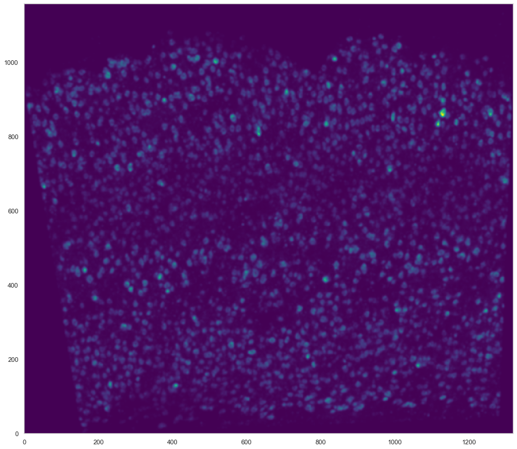
[18]:
analysis.find_localmax()
Found 4535 local max vectors.
[19]:
plt.figure(figsize=[15, 15])
ds.plot_l1norm(rotate=3, cmap="Greys")
ds.plot_localmax(rotate=3)
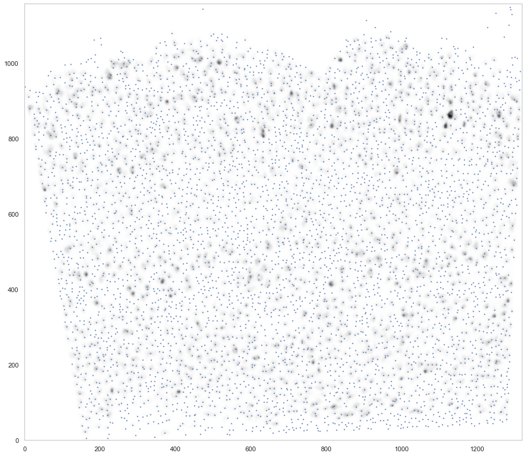
[20]:
analysis.normalize_vectors()
Loaded a cached normalized vector field (to avoid this behavior, set re_run=True).
[7]:
cell_by_gene = pd.read_csv("data/jeremy_filtered/MERFISH_v1_filtered_cellxgene.csv")
cell_by_gene = cell_by_gene.set_index('gene_name').T[ds.genes]
[8]:
from sklearn.preprocessing import normalize, scale
#cell_by_gene_normalized = ssam.run_sctransform(cell_by_gene.reset_index(drop=True), plot_model_pars=True)[0]
cell_by_gene_normalized = np.log(normalize(cell_by_gene, norm="l1", axis=1) * 10 + 1)
cell_by_gene_normalized_scaled = scale(cell_by_gene_normalized)
[9]:
from collections import defaultdict
from itertools import chain
def sort_genes(centroids, tbl, genes, min_exp=0.5):
sorted_genes = defaultdict(lambda: [])
sorted_cnt = 0
while sorted_cnt < len(genes):
for cidx, mean_cl in enumerate(centroids):
for gidx in np.argsort(mean_cl)[::-1]:
if all([not genes[gidx] in l for l in sorted_genes.values()]):
if mean_cl[gidx] < min_exp:
sorted_genes["rem"].append(genes[gidx])
else:
sorted_genes[cidx].append(genes[gidx])
sorted_cnt += 1
break
sorted_genes = list(chain(*[sorted_genes[i] for i in range(len(centroids))])) + sorted_genes["rem"]
sorted_gidx = [list(genes).index(g) for g in sorted_genes]
return tbl[:, sorted_gidx], sorted_genes
[21]:
def plot_heatmap(sorted_cbg, sorted_genes, calls, uniq_calls, cols, figsize):
from sklearn import preprocessing
from mpl_toolkits.axes_grid1 import Divider, Size
from matplotlib import patches
rects = []
sorted_cbg2 = np.zeros_like(sorted_cbg)
curpos = 0
for idx, (cell_type, col) in enumerate(zip(uniq_calls, cols)):
cl_vecs = sorted_cbg[calls.subclass == cell_type]
sorted_cbg2[curpos:curpos+len(cl_vecs)] = cl_vecs
rects.append(patches.Rectangle((curpos, 0), curpos+len(cl_vecs), 1, linewidth=0, facecolor=col))
curpos += len(cl_vecs)
fig = plt.figure(figsize=figsize)
#fig, axes = plt.subplots(2, 1, figsize=[20, 10], sharex=True)
h = [Size.Fixed(1.5), Size.Scaled(1.0)]
v = [Size.Fixed(0), Size.Scaled(1.0), Size.Fixed(0.05), Size.Fixed(0.3)]
divider = Divider(fig, (0, 0, 1, 1), h, v, aspect=False)
ax_heatmap = fig.add_axes(divider.get_position(), axes_locator=divider.new_locator(nx=1, ny=1))
ax_ctbar = fig.add_axes(divider.get_position(), axes_locator=divider.new_locator(nx=1, ny=3), sharex=ax_heatmap)
for rect in rects:
ax_ctbar.add_patch(rect)
ax_ctbar.axes.xaxis.set_visible(False)
ax_ctbar.axes.yaxis.set_visible(False)
for sp in ax_ctbar.spines.values():
sp.set_linewidth(0.5)
sp.set_color('k')
sns.heatmap(sorted_cbg2.T[::-1, :], vmin=-2.5, vmax=2.5, cmap='bwr', yticklabels=sorted_genes[::-1],
cbar=None, ax=ax_heatmap)
ax_heatmap.axes.xaxis.set_visible(False)
for tick in ax_heatmap.get_yticklabels():
tick.set_fontname("Arial")
for sp in ax_heatmap.spines.values():
sp.set_linewidth(0.5)
sp.set_color('k')
sp.set_visible(True)
plt.yticks(rotation=0)
#ax_hist = fig.add_axes([1.02, 0.74, 0.08, 0.1])
#ax_hist.hist(np.ravel(sorted_cbg2), bins=100, histtype='step', lw=3, color='lime')
#ax_hist.set_xlim([-2.5, 2.5])
#ax_hist.axes.xaxis.set_ticks([-2.5, 0, 2.5])
#ax_hist.axes.yaxis.set_visible(False)
return fig
[11]:
calls_nwcs = pd.read_csv("consensus_calls/renee/MERFISH_v1_filtered_combined_mapping_neg_weight_subclass.csv")
[12]:
calls_nwcs
[12]:
| sample_name | subclass | rmax | x | y | |
|---|---|---|---|---|---|
| 0 | 1 | L6 PT | 0.494448 | 712.40142 | 204.819190 |
| 1 | 12 | L2/3 IT | 0.682338 | 1217.39318 | 883.516611 |
| 2 | 18 | L2/3 IT | 0.638946 | 891.96394 | 1036.272708 |
| 3 | 20 | L2/3 IT | 0.367690 | 654.74648 | 973.435156 |
| 4 | 22 | L2/3 IT | 0.771932 | 645.90474 | 923.882162 |
| ... | ... | ... | ... | ... | ... |
| 2145 | 5873 | L6 PT | 0.712868 | 1172.87814 | 136.951414 |
| 2146 | 5875 | L2/3 IT | 0.497523 | 241.48159 | 665.555457 |
| 2147 | 5877 | L4 | 0.568966 | 968.05080 | 710.759896 |
| 2148 | 5878 | Pvalb | 0.649862 | 859.54284 | 480.890285 |
| 2149 | 5990 | L2/3 IT | 0.461098 | 482.98299 | 1056.178312 |
2150 rows × 5 columns
[22]:
uniq_celltypes_nwcs = [cl for cl in cell_class_colors.keys() if cl in calls_nwcs.subclass.unique()]
centroids_nwcs = []
for cell_type in uniq_celltypes_nwcs:
centroids_nwcs.append(np.mean(cell_by_gene_normalized[calls_nwcs.subclass == cell_type], axis=0))
[23]:
centroids_scaled_nwcs = []
for cell_type in uniq_celltypes_nwcs:
centroids_scaled_nwcs.append(np.mean(cell_by_gene_normalized_scaled[calls_nwcs.subclass == cell_type], axis=0))
sorted_cbg, sorted_genes = sort_genes(centroids_scaled_nwcs, cell_by_gene_normalized_scaled, ds.genes)
[24]:
cols = [cell_class_colors[ct] for ct in uniq_celltypes_nwcs]
plot_heatmap(sorted_cbg[:, ::-1], sorted_genes[::-1], calls_nwcs, uniq_celltypes_nwcs, cols, [20, 50]).savefig("merfish_heatmap_nwcs.pdf")
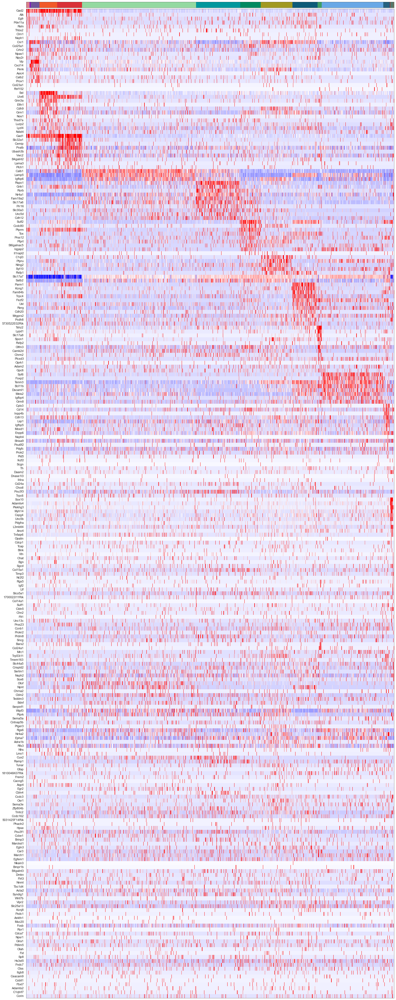
[156]:
from sklearn import preprocessing
fig, axes = plt.subplots(len(uniq_celltypes_nwcs), 1, figsize=[20, len(uniq_celltypes_nwcs)*2])
plt.subplots_adjust(hspace=0)
for idx, cell_type in enumerate(uniq_celltypes_nwcs):
cl_vecs = sorted_cbg[calls_nwcs.subclass == cell_type]
if len(cl_vecs) == 1:
cl_vecs = np.array([cl_vecs[0], cl_vecs[0]])
sns.violinplot(ax=axes[idx], data=cl_vecs[:, -30:], width=1, cut=0)
axes[idx].set_ylabel(cell_type)
axes[idx].set_yticks([])
axes[idx].set_ylim([-5, 5])
axes[idx].set_xticklabels(sorted_genes[-30:], rotation=90)
pass
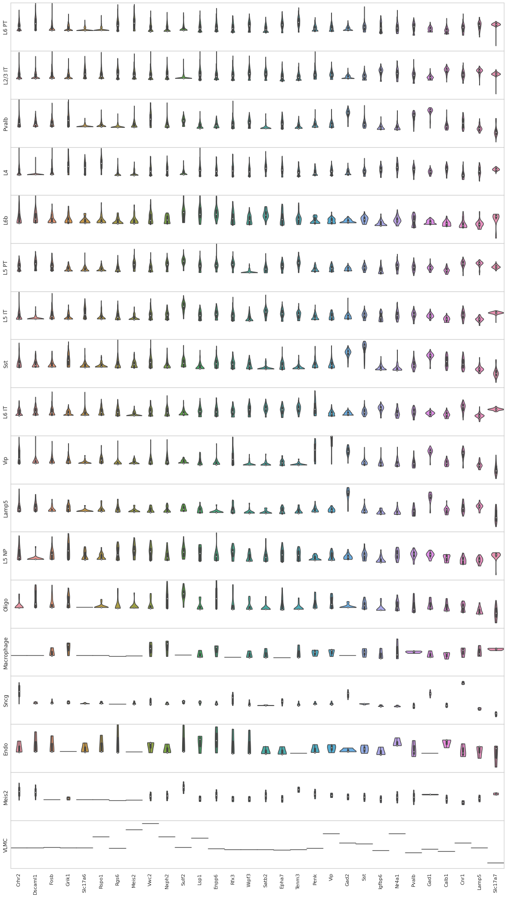
[11]:
map_colors_nwcs = [cell_class_colors[ct] for ct in uniq_celltypes_nwcs]
---------------------------------------------------------------------------
NameError Traceback (most recent call last)
<ipython-input-11-bb2957d2c7e3> in <module>
----> 1 map_colors_nwcs = [cell_class_colors[ct] for ct in uniq_celltypes_nwcs]
<ipython-input-11-bb2957d2c7e3> in <listcomp>(.0)
----> 1 map_colors_nwcs = [cell_class_colors[ct] for ct in uniq_celltypes_nwcs]
NameError: name 'cell_class_colors' is not defined
[27]:
analysis.map_celltypes(centroids_nwcs)
Generating cell-type map for centroid #0...
Processing chunk (0/3)...
Processing chunk (1/3)...
Processing chunk (2/3)...
Generating cell-type map for centroid #1...
Processing chunk (0/3)...
Processing chunk (1/3)...
Processing chunk (2/3)...
Generating cell-type map for centroid #2...
Processing chunk (0/3)...
Processing chunk (1/3)...
Processing chunk (2/3)...
Generating cell-type map for centroid #3...
Processing chunk (0/3)...
Processing chunk (1/3)...
Processing chunk (2/3)...
Generating cell-type map for centroid #4...
Processing chunk (0/3)...
Processing chunk (1/3)...
Processing chunk (2/3)...
Generating cell-type map for centroid #5...
Processing chunk (0/3)...
Processing chunk (1/3)...
Processing chunk (2/3)...
Generating cell-type map for centroid #6...
Processing chunk (0/3)...
Processing chunk (1/3)...
Processing chunk (2/3)...
Generating cell-type map for centroid #7...
Processing chunk (0/3)...
Processing chunk (1/3)...
Processing chunk (2/3)...
Generating cell-type map for centroid #8...
Processing chunk (0/3)...
Processing chunk (1/3)...
Processing chunk (2/3)...
Generating cell-type map for centroid #9...
Processing chunk (0/3)...
Processing chunk (1/3)...
Processing chunk (2/3)...
Generating cell-type map for centroid #10...
Processing chunk (0/3)...
Processing chunk (1/3)...
Processing chunk (2/3)...
Generating cell-type map for centroid #11...
Processing chunk (0/3)...
Processing chunk (1/3)...
Processing chunk (2/3)...
Generating cell-type map for centroid #12...
Processing chunk (0/3)...
Processing chunk (1/3)...
Processing chunk (2/3)...
Generating cell-type map for centroid #13...
Processing chunk (0/3)...
Processing chunk (1/3)...
Processing chunk (2/3)...
Generating cell-type map for centroid #14...
Processing chunk (0/3)...
Processing chunk (1/3)...
Processing chunk (2/3)...
Generating cell-type map for centroid #15...
Processing chunk (0/3)...
Processing chunk (1/3)...
Processing chunk (2/3)...
Generating cell-type map for centroid #16...
Processing chunk (0/3)...
Processing chunk (1/3)...
Processing chunk (2/3)...
Generating cell-type map for centroid #17...
Processing chunk (0/3)...
Processing chunk (1/3)...
Processing chunk (2/3)...
[28]:
analysis.filter_celltypemaps(min_norm=0.6, min_r=0.6)
[29]:
plt.figure(figsize=[20, 20])
ds.plot_celltypes_map(rotate=3, colors=map_colors_nwcs)
plt.title("MERFISH - NWCS (SSAM)")
[29]:
Text(0.5, 1.0, 'MERFISH - NWCS (SSAM)')
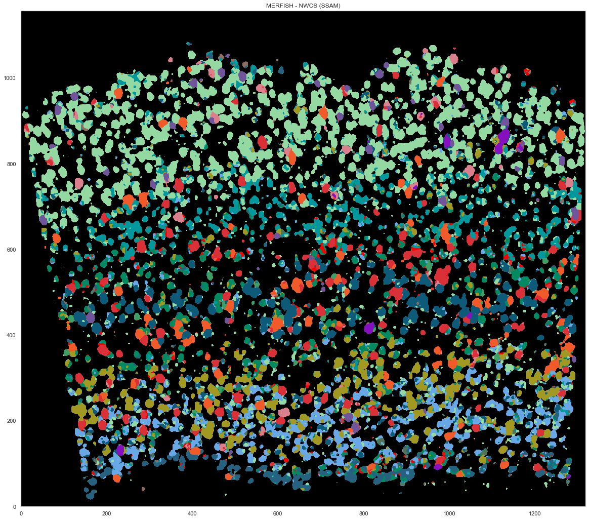
[30]:
ds.centroids = centroids_nwcs # TODO: this should not be necessary!
[31]:
analysis.bin_celltypemaps(step=10, radius=100)
[37]:
analysis.find_domains(n_clusters=20, merge_remote=False, merge_thres=0.8, norm_thres=4000)
[38]:
plt.figure(figsize=[15, 15])
ds.plot_domains(rotate=3, cmap='rainbow', z=0)
plt.axis('off')
plt.tight_layout()
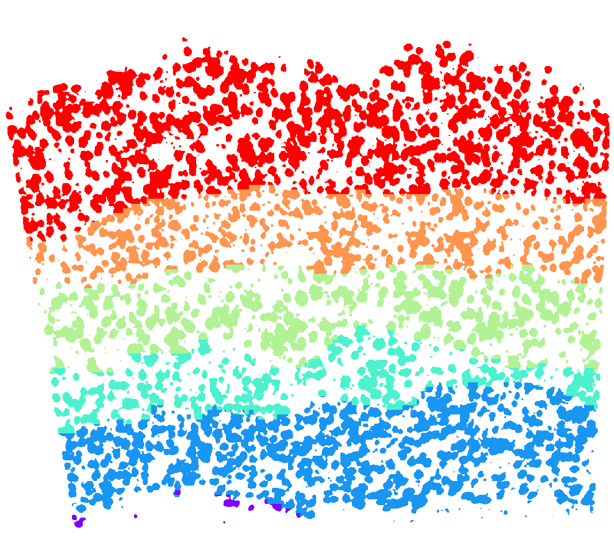
[39]:
layer_annotations = ds.inferred_domains[ds.local_maxs]
[16]:
calls_gmcs = pd.read_csv("consensus_calls/charles/merfish_jeremy_pciseq_renee_eeshit_yilin_gabriele_consensus_df.csv")
[17]:
for cl in calls_gmcs.subclass.unique():
if cl == "L23_IT":
calls_gmcs.subclass.loc[calls_gmcs.subclass == "L23_IT"] = "L2/3 IT"
elif "_" in cl:
calls_gmcs.subclass.loc[calls_gmcs.subclass == cl] = cl.replace("_", " ")
/tmp/ipykernel_576/1845947111.py:5: SettingWithCopyWarning:
A value is trying to be set on a copy of a slice from a DataFrame
See the caveats in the documentation: https://pandas.pydata.org/pandas-docs/stable/user_guide/indexing.html#returning-a-view-versus-a-copy
calls_gmcs.subclass.loc[calls_gmcs.subclass == cl] = cl.replace("_", " ")
/tmp/ipykernel_576/1845947111.py:3: SettingWithCopyWarning:
A value is trying to be set on a copy of a slice from a DataFrame
See the caveats in the documentation: https://pandas.pydata.org/pandas-docs/stable/user_guide/indexing.html#returning-a-view-versus-a-copy
calls_gmcs.subclass.loc[calls_gmcs.subclass == "L23_IT"] = "L2/3 IT"
[25]:
uniq_celltypes_gmcs = [cl for cl in cell_class_colors.keys() if cl in calls_gmcs.subclass.unique()]
centroids_gmcs = []
for cell_type in uniq_celltypes_gmcs:
centroids_gmcs.append(np.mean(cell_by_gene_normalized[calls_gmcs.subclass == cell_type], axis=0))
[26]:
centroids_scaled_gmcs = []
for cell_type in uniq_celltypes_gmcs:
centroids_scaled_gmcs.append(np.mean(cell_by_gene_normalized_scaled[calls_gmcs.subclass == cell_type], axis=0))
sorted_cbg, sorted_genes = sort_genes(centroids_scaled_gmcs, cell_by_gene_normalized_scaled, ds.genes)
[27]:
cols = [cell_class_colors[ct] for ct in uniq_celltypes_gmcs]
plot_heatmap(sorted_cbg[:, ::-1], sorted_genes[::-1], calls_gmcs, uniq_celltypes_gmcs, cols, [20, 50]).savefig("merfish_heatmap_gmcs.pdf")
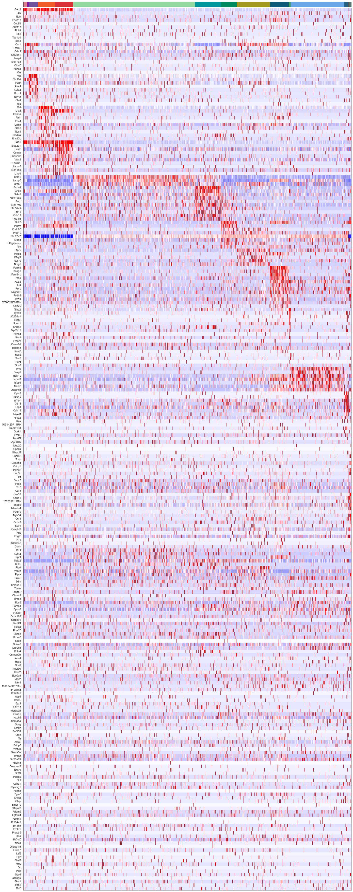
[18]:
from sklearn import preprocessing
fig, axes = plt.subplots(len(uniq_celltypes_gmcs), 1, figsize=[20, len(uniq_celltypes_gmcs)*2])
plt.subplots_adjust(hspace=0)
for idx, cell_type in enumerate(uniq_celltypes_gmcs):
cl_vecs = cell_by_gene_normalized_scaled[calls_gmcs.subclass == cell_type]
if len(cl_vecs) == 1:
cl_vecs = np.array([cl_vecs[0], cl_vecs[0]])
sns.violinplot(ax=axes[idx], data=cl_vecs, width=1)
axes[idx].set_ylabel(cell_type)
axes[idx].set_yticks([])
axes[idx].set_xticklabels(ds.genes, rotation=90)
pass
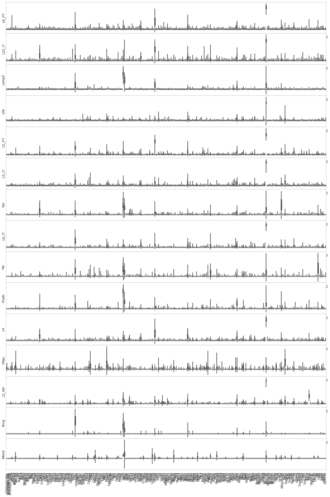
[ ]:
map_colors_gmcs = [cell_class_colors[ct.replace("_", " ").replace("L23", "L2/3")] for ct in uniq_celltypes_gmcs]
[150]:
analysis.map_celltypes(centroids_gmcs)
Generating cell-type map for centroid #0...
Processing chunk (0/3)...
Processing chunk (1/3)...
Processing chunk (2/3)...
Generating cell-type map for centroid #1...
Processing chunk (0/3)...
Processing chunk (1/3)...
Processing chunk (2/3)...
Generating cell-type map for centroid #2...
Processing chunk (0/3)...
Processing chunk (1/3)...
Processing chunk (2/3)...
Generating cell-type map for centroid #3...
Processing chunk (0/3)...
Processing chunk (1/3)...
Processing chunk (2/3)...
Generating cell-type map for centroid #4...
Processing chunk (0/3)...
Processing chunk (1/3)...
Processing chunk (2/3)...
Generating cell-type map for centroid #5...
Processing chunk (0/3)...
Processing chunk (1/3)...
Processing chunk (2/3)...
Generating cell-type map for centroid #6...
Processing chunk (0/3)...
Processing chunk (1/3)...
Processing chunk (2/3)...
Generating cell-type map for centroid #7...
Processing chunk (0/3)...
Processing chunk (1/3)...
Processing chunk (2/3)...
Generating cell-type map for centroid #8...
Processing chunk (0/3)...
Processing chunk (1/3)...
Processing chunk (2/3)...
Generating cell-type map for centroid #9...
Processing chunk (0/3)...
Processing chunk (1/3)...
Processing chunk (2/3)...
Generating cell-type map for centroid #10...
Processing chunk (0/3)...
Processing chunk (1/3)...
Processing chunk (2/3)...
Generating cell-type map for centroid #11...
Processing chunk (0/3)...
Processing chunk (1/3)...
Processing chunk (2/3)...
Generating cell-type map for centroid #12...
Processing chunk (0/3)...
Processing chunk (1/3)...
Processing chunk (2/3)...
Generating cell-type map for centroid #13...
Processing chunk (0/3)...
Processing chunk (1/3)...
Processing chunk (2/3)...
Generating cell-type map for centroid #14...
Processing chunk (0/3)...
Processing chunk (1/3)...
Processing chunk (2/3)...
[151]:
analysis.filter_celltypemaps(min_norm=0.6, min_r=0.6)
[152]:
plt.figure(figsize=[20, 20])
ds.plot_celltypes_map(rotate=3, colors=map_colors_gmcs)
plt.title("MERFISH - GMCS (SSAM)")
[152]:
Text(0.5, 1.0, 'MERFISH - GMCS (SSAM)')
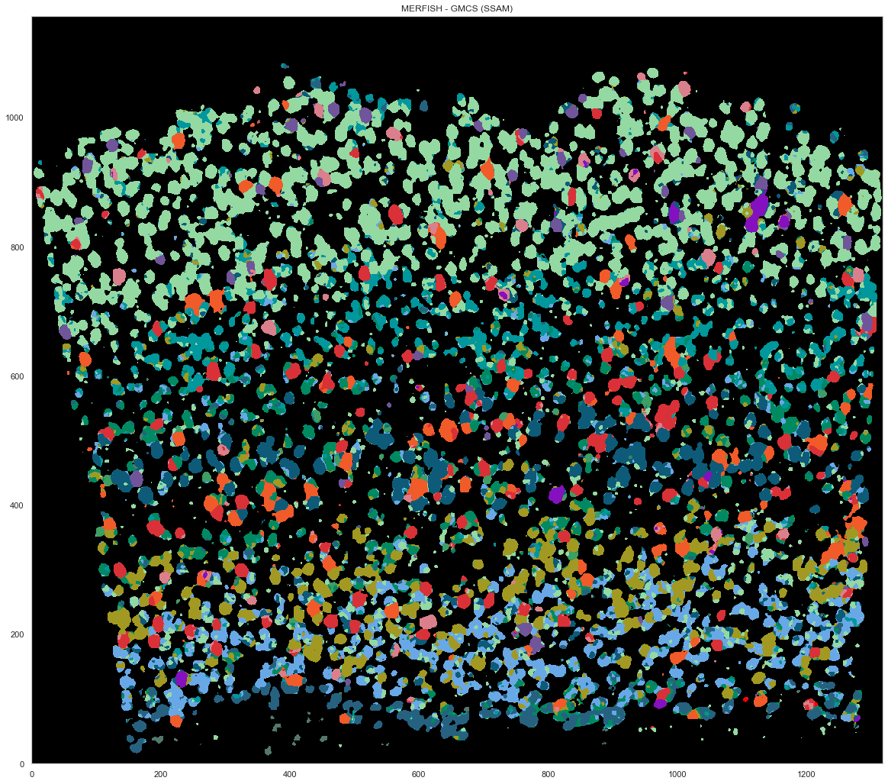
[44]:
closest_nwcs_clusters = []
closest_nwcs_clusters_r = []
closest_gmcs_clusters = []
closest_gmcs_clusters_r = []
for v in ds.normalized_vectors:
corrs = [ssam.utils.corr(v, centroids_nwcs[i]) for i in range(len(centroids_nwcs))]
idx = np.argmax(corrs)
closest_nwcs_clusters.append(uniq_celltypes_nwcs[idx])
closest_nwcs_clusters_r.append(corrs[idx])
corrs = [ssam.utils.corr(v, centroids_gmcs[i]) for i in range(len(centroids_gmcs))]
idx = np.argmax(corrs)
closest_gmcs_clusters.append(uniq_celltypes_gmcs[idx])
closest_gmcs_clusters_r.append(corrs[idx])
df = pd.DataFrame(ds.normalized_vectors, columns=ds.genes)
df.to_csv("merfish_ssam_localmax_expression.csv")
df = pd.DataFrame()
df['x'] = ds.local_maxs[0]
df['y'] = ds.local_maxs[1]
df['closest_consensus_nwcs_cluster'] = closest_nwcs_clusters
df['closest_consensus_nwcs_cluster_r'] = closest_nwcs_clusters_r
df['closest_consensus_gmcs_cluster'] = closest_gmcs_clusters
df['closest_consensus_gmcs_cluster_r'] = closest_gmcs_clusters_r
df['layer_annotations_nwcs'] = layer_annotations
df.to_csv("merfish_ssam_localmax_metadata_with_layer.csv")
[155]:
from scipy.spatial import ConvexHull
plt.figure(figsize=[20, 20])
plt.gca().set_facecolor('black')
good_ids = cell_by_gene.index.astype(int)
i = 0
for cid, sdf in locations.groupby("cell"):
if cid in good_ids:
points = sdf.iloc[:, :2].to_numpy()
hull = ConvexHull(points)
plt.fill(points[hull.vertices, 0], points[hull.vertices, 1], cell_class_colors[calls_nwcs.subclass[i]], edgecolor="black", linewidth=0.5)
i += 1
plt.xlim([0, ds.shape[0]])
plt.ylim([0, ds.shape[1]])
plt.gca().set_aspect('equal', adjustable='box')
plt.title("MERFISH - NWCS")
[155]:
Text(0.5, 1.0, 'MERFISH - NWCS')
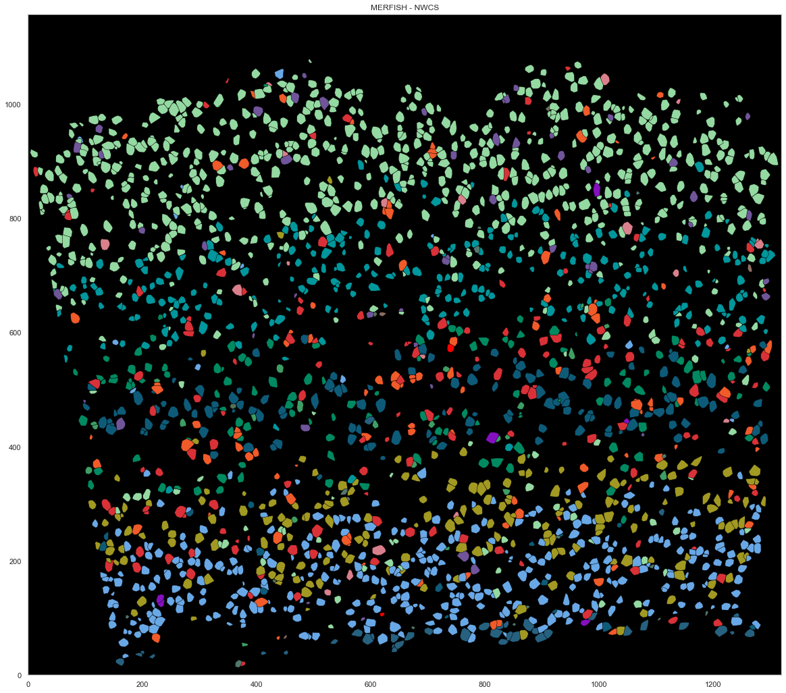
[154]:
from scipy.spatial import ConvexHull
plt.figure(figsize=[20, 20])
plt.gca().set_facecolor('black')
good_ids = cell_by_gene.index.astype(int)
i = 0
for cid, sdf in locations.groupby("cell"):
if cid in good_ids:
points = sdf.iloc[:, :2].to_numpy()
hull = ConvexHull(points)
plt.fill(points[hull.vertices, 0], points[hull.vertices, 1], cell_class_colors[calls_gmcs.subclass[i].replace("_", " ").replace("L23", "L2/3")], edgecolor="black", linewidth=0.5)
i += 1
plt.xlim([0, ds.shape[0]])
plt.ylim([0, ds.shape[1]])
plt.gca().set_aspect('equal', adjustable='box')
plt.title("MERFISH - GMCS")
[154]:
Text(0.5, 1.0, 'MERFISH - GMCS')
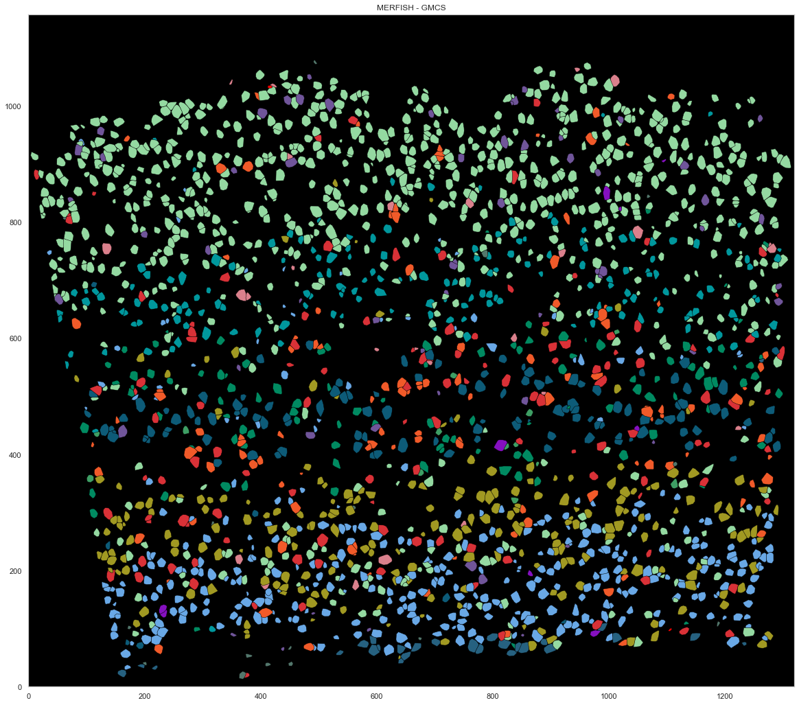